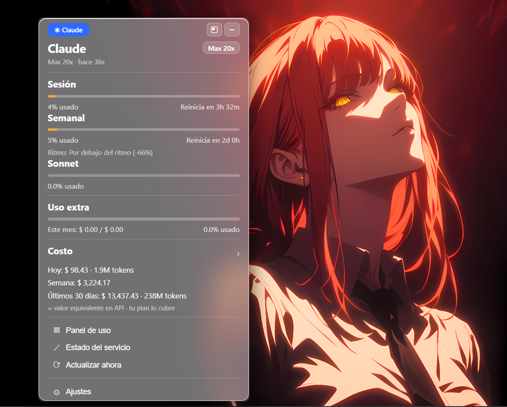

Sesión y semanal
El % usado de tu ventana de 5 horas y de los 7 días, con cuándo se reinician y el "ritmo".
Sesión de 5 horas, límite semanal, Sonnet y costo — siempre a un clic. Ligera, privada y open source. Sin abrir paneles, sin servidores.
Windows 10/11 · gratis y open source (MIT) · ~3.6 MB · necesita Claude Code

Un panel de cristal que vive junto a tu reloj.
El % usado de tu ventana de 5 horas y de los 7 días, con cuándo se reinician y el "ritmo".
Lo gastado hoy, esta semana y en 30 días, como valor equivalente en API. Tu plan lo cubre.
Te avisa cuando se reinicia tu sesión de 5h, cuando llegas al límite y cuando se reinicia la semana.
Arrástrala a donde quieras, minimízala a la bandeja o déjala en modo compacto siempre encima.
Todo se lee localmente en tu PC. Sin telemetría, sin servidores de terceros. Código abierto y auditable.
Hecha con Rust + Tauri sobre el WebView2 de Windows. Puede estar abierta todo el día sin que lo notes.
Lee la sesión que Claude Code ya tiene en tu PC. No inventa nada.
Usa el token de Claude Code en ~/.claude. Nunca se empaqueta ni se comparte.
Pregunta a Anthropic tu uso de sesión, semanal y Sonnet, cada pocos minutos.
Analiza tus logs locales para estimar tokens y gasto, sin enviar nada a ningún lado.
Para Windows 10 y 11. Open source bajo licencia MIT.
¿SmartScreen avisa? Es por ser una app sin firmar → Más información → Ejecutar de todas formas.
Herramientas y contenido para sacarle el jugo a la IA.